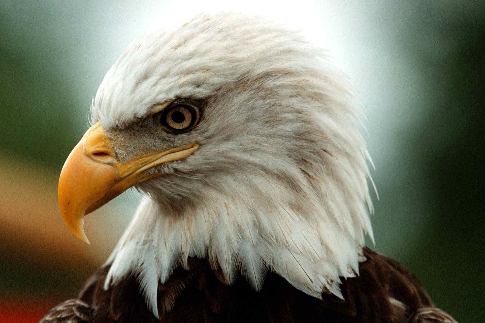

Endangered Species
Eagle
 The bald eagle is touted as the Endangered Species Act's crowning jewel. According to the U.S. Fish and Wildlife Service, the bald eagle nearly went extinct forty years ago. "Habitat destruction and degradation, illegal shooting, and contaminated food sources decimated the eagle population," says U.S. Fish and Wildlife.
In 1972, Eagles were given protection under the Migratory Bird Treaty Act and a year later, when the Act was put into effect, bald eagles were added to the endangered list. 1982 saw the introduction of the Southwestern Bald Eagle Recovery Plan, which increased populations by tracking their breeding and migration patterns, sources of food, and assessing unnatural disturbances such as the pesticide DDT.